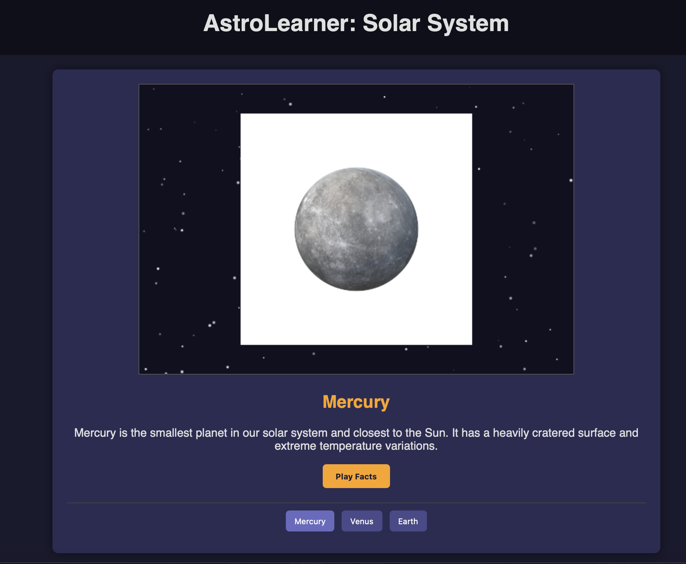

Welcome to AstroLearner!
Your interactive guide to exploring the wonders of the universe.
AstroLearner is a fun and engaging web application designed to help you learn about planets, stars, constellations, and more. Dive into the cosmos and expand your astronomical knowledge!
Key Features:
- Interactive Planet Explorer: Learn fascinating facts about each planet in our solar system.
- Constellation Guide: Discover major constellations and how to find them in the night sky.
- Space Quiz: Test your knowledge with fun and challenging astronomy quizzes.
- Beautiful Imagery: Enjoy stunning visuals of celestial objects.

How to Get Started:
It's easy to begin your cosmic journey with AstroLearner:
- Simply click the button below to launch the AstroLearner web application in your browser.
- Explore the different sections and start learning!
- For the best experience on mobile or desktop, look for an "Install App" or "Add to Home Screen" option in your browser to use AstroLearner like a native app.
(No download or installation required - it's all in your browser!)